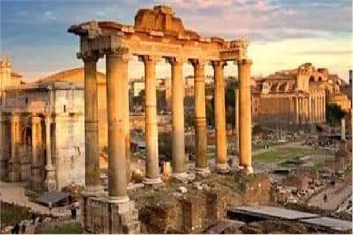

تاريخ مصر هو تاريخ الحضارة الإنسانية حيث أبدع الإنسان المصري وقدًّم حضارة عريقة سبقت حضارات شعوب العالم. حضارة رائدة في ابتكاراتها وعمائرها وفنونها حيث أذهلت العالم والعلماء بفكرها وعلمها، فهي حضارة متصلة الحلقات تفاعل معها الإنسان المصري وتركت في عقله ووجدانه بصماتها. لقد كانت مصر أول دولة في العالم القديم عرفت مبادئ الكتابة وابتدعت الحروف والعلامات الهيروغليفية، وكان المصريون القدماء حريصين على تدوين وتسجيل تاريخهم والأحداث التي صنعوها وعاشوها، وبهذه الخطوة الحضارية العظيمة انتقلت مصر من عصور ما قبل التاريخ وأصبحت أول دولة في العالم لها تاريخ مكتوب، ولها نظم ثابتة ولذلك اعتبرت بكافة المعايير أُما للحضارات الإنسانية. إن لمصر دورها الحضاري والتاريخي والديني حيث كانت المكان الذي احتضن الأنبياء، والأرض التي سارت خطواتهم عليها، فجاء إليها أبو الأنبياء إبراهيم عليه السلام وتزوج من السيدة هاجر، وجاء إليها يوسف عليه السلام وأصبح فيها وزيرا وتبعه إليها أبوه يعقوب، ودار أعظم حوار بين الله عز وجل وموسى عليه السلام على أرضها، وإلى مصر لجأت العائلة المقدسة السيدة مريم العذراء والسيد المسيح طفلاً ويوسف النجار وقاموا برحلة تاريخية مباركة في أرضها، وقد اختار الله سبحانه وتعالى مصر بالذات لتكون الملجأ الحصين الذي شاءت السماء أن يكون واحة السلام والأمان على الدوام وملتقى الأديان السماوية. لقد تتابعت على أرض مصر حضارات متعددة فكانت مصر مهدا للحضارة الفرعونية، وحاضنة للحضارة الإغريقية والرومانية ومنارة للحضارة القبطية، وحامية للحضارة الإسلامية. ولقد اتسم شعب مصر على طول التاريخ بالحب والتسامح والود والكرم الذي تميز به هذا الشعب حيث امتزج أبناء مصر في نسيج واحد متين .
 هيا بنا نرى المشكلات التي تواجه الحضاره المصرية